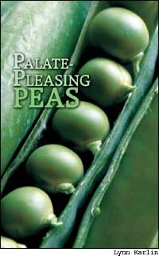
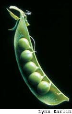
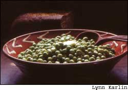
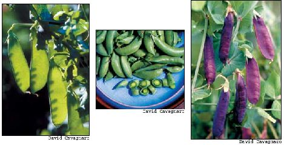
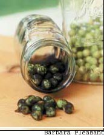

Palate-Pleasing Peas
February/March 2005
By Barbara Pleasant
Fresh or frozen, peas are among the most versatile of all vegetables. They are naturals for Asian stir-fried dishes laced with ginger, garlic and sesame oil, and their vibrant green adds color to pasta dishes. Peas also can be used to make a delicious puréed soup, or you can enjoy them in fruit-and-vegetable salads composed of peas and pineapple or orange sections, dressed with a sesame-scented vinaigrette. And of course there are the classic veggie pairings: peas with carrots, peas with cauliflower, peas with pearl onions.
It is but a happy accident that peas’ fine flavor and vibrant good looks are matched by great nutrition. All peas are a good source of calcium, iron and vitamins A and C, and those with edible pods provide plenty of dietary fiber and make terrific snack food.
The “homegrown” difference between fresh and not-so-fresh peas must be tasted to be believed. Only gardeners and their customers know the sweet, crisp flavor of fresh peas, be they shell peas, snow peas or plump snap peas. If you grow all three types or buy them from your local farmer’s market, you’ll have everything you need to explore pea cuisine - the source of several crazes in the history of food. In 1696, Madame de Maintenon, wife of French King Louis XIV, recorded that “Some ladies, even after having supped at the Royal Table, and well supped too, returning to their homes, at the risk of suffering from indigestion, will again eat peas before going to bed. It is both a fashion and a madness.”
The peas she mentioned were early strains of English shell peas, so-named because English breeders developed many fine-flavored varieties in the centuries that followed. Today, in addition to shell peas, we can also enjoy the edible pods of snow and snap peas. Often associated with Asian food, snow peas have flat pods, while snap peas feature thicker pods that are more round than flat. Snap peas are now available in the frozen food section of every major supermarket, and because they produce more food per square foot than other peas and freeze beautifully, they are the favorite of many gardeners.
Market gardeners love them, too. “They sell very easily if you give people samples, and it’s great to hear the crunch as they bite into them,” says Kevin Wilson of Powell River, British Columbia, who harvested 27 pounds of snap peas from a 20-foot quadruple row last spring, and then sold them at a farmer’s market by the pint. Snow peas yield lower because the pods are not as fat, but they, too, can make a profitable crop, and the young leaves of some snow peas are good to eat in salads. The pods of English peas are too tough to eat, so the harvest is limited to the plants’ succulent immature seeds, which are so far superior to canned peas that there’s hardly a way to compare them.
More Productive Peas
Peas require cool temperatures, below 80 degrees, so they grow best in areas where cool spring weather lasts well into early summer. Maine, Wisconsin and the Pacific Northwest have the best climates for peas, but anyone who plants promptly in early spring can grow a good crop. To make sure peas mature before the weather turns hot, plant them three or more weeks before the last spring frost. Young pea plants have no trouble surviving late cold snaps, and the seeds often are willing to germinate under late snow.
Peas are nitrogen-fixing legumes, a miracle that involves an interaction between pea roots and several strains of soil-borne bacteria. As long as the soil is reasonably fertile and contains a little nitrogen left from the previous crop, no further feeding is normally needed. An appropriate soil pH of about 6.5 is important for smooth operation of the nitrogen-fixing process, and the bacteria need to be present, too. They usually are present in soil where peas have been grown previously, but it’s cheap and easy to inoculate pea seed with N-fixing bacteria. You can buy the inoculant at garden centers (it works with beans, too). Just wet the seeds, then shake them in a jar with the powdered inoculant before planting. However, it’s always wise to amend the soil with a half inch to 1 inch of compost before planting peas.
Peas benefit from dense planting, in which the plants are only 2 inches apart in the row. Wilson plants peas in quadruple rows, with two rows of peas on each side of a trellis in a 3-foot-wide bed. At Peregrine Farm in Alamance County, N.C., organic farmers Alex and Betsy Hitt use the quadruple-row strategy to grow big crops of snap peas; their approach will work with other types of peas, as well.
“Our standard pea-planting method is two rows of a tall pea, like ‘Sugar Snap,’ with rows of a shorter variety on either side,” Alex Hitt says. “A trellis goes down the middle, between the two rows of ‘Sugar Snaps.’ This arrangement helps the tall variety stay upright until it begins to tendril and grab the trellis. Because the tall variety does not really produce any peas below 24 inches, this gives us production lower down, and a few days earlier, from the shorter variety.” Hitt doesn’t think much of short varieties in terms of flavor or productivity, but he believes they help tall varieties grow better.
The following seed companies offer large selections, including collections that let you sample several
varieties in a season:
Johnny’s Selected Seeds
955 Benton Ave.
Winslow, ME 04910
(800) 879-2258
www.johnnyseeds.com
Nichols Garden Nursery
1190 Old Salem Road N.E.
Albany, OR 97321
(800) 422-3985
www.nicholsgardennursery.com
Park Seed
1 Parkton Ave.
Greenwood, SC 29647
(800) 213-0076
www.parkseed.com
Territorial Seed
P.O. Box 158
Cottage Grove, OR 97424
(541) 942-9547
www.territorial-seed.com
Willhite Seed
P.O. Box 23
Poolville, TX 76487
(800) 828-1840
www.willhiteseed.com
A pea trellis does not need to be fancy, but even short peas need something to grab onto with their curling tendrils. If you plan to follow peas with a nonvining crop, a simple string trellis attached to posts is great because you can cut it down and compost the string and spent vines together. Nylon or plastic net trellising (sold by garden supply companies for less than $10 for a 5-by-15-foot piece) attached to posts also works well. Many gardeners follow peas with cucumbers, pole beans or another vining crop, so they install a secure trellis made of wire mesh, and keep it in service all summer long.
A super low-maintenance trellising idea comes from David Fisher and Anna Maclay, owners of Natural Roots organic farm in Conway, Mass. They grow peas on upright oats: Using a walk-behind seeder, they plant one oat seed for every five or six peas. “The oats and peas grow at the same rate, and reach the same height of about 30 inches,” Fisher says. The method works with shell, snow and snap peas, and later on, the farm’s livestock get to clean up the row.
And then there’s the old practice of supporting peas with small limbs gleaned from early spring fruit tree pruning. This type of twig trellis works fine with peas that grow less than 30 inches tall, but taller varieties require more substantial support.
Harvesting Peas
When planted in cool, rich soil and given something to climb on, peas pretty much grow themselves. Then comes the fun part, picking the peas - which is not without its challenges. The sugar content of peas increases as pods approach ripeness and quickly converts to starch as the seeds become mature. With snow peas and snap peas, overripe specimens also get tough and stringy, so check your peas daily when you think they’re almost ripe.
Harvest English peas before the pods become waxy and when the peas are plump and sweet. Pick snow peas when the little peas just begin to swell in the pods. With snap peas, do not be misled by the flat pods sometimes found in your supermarket. Young specimens store and ship well, but they do not have the high sugar content of perfectly ripe snap peas. “It’s a mistake to harvest snap peas too early or too late,” Hitt says. “Pick them when they have begun to show the individual swell of each pea in the pod. Before that, they have not produced the maximum amount of sugar, and after that, they become tough and pithy.”
The dried peas used to make pea soup are grown just like other peas, and then allowed to mature until the pods begin to dry. A few seed companies still sell the ‘Alaska’ variety, but many more choices bear brown, yellow or green peas, and some bear pretty purple pods.an Jason at Salt Spring Seeds on Salt Spring Island, British Columbia, keeps one of the best selections. Salt Spring’s online catalog is available at www.saltspringseeds.com, or you can write to Salt Spring Seeds, Box 444, Ganges, Salt Spring Island, BC, Canada V8K2W1. For more pea sources, see “Picking Pea Varieties”.
Storing Peas
Peas cook so quickly that their flavor suffers when they are canned, but they are a cinch to freeze. If you grow a nice crop or find them at a farmer’s market, freezing is a simple matter of dumping the cleaned peas or pods into boiling water for a minute, scooping them out and putting them into a bowl of ice water, and then packing them into containers. Fill freezer bags with blanched, cooled peas and then lay the filled bags flat on a cookie sheet in the freezer. When the bags are frozen hard, they can be neatly stacked into their permanent place in the freezer. When frozen, English peas and snap peas keep well for a year, but snow peas are best used within a few months.
Eat Your Pea Greens
When Washington State University (WSU) Extension researchers noticed pea vines selling for several dollars a pound at Pike Place Market in Seattle, they launched a two-year study to evaluate the edibility of various types of pea foliage. After looking at a dozen varieties, including shell, snap, snow, split and marrowfat peas (the type of pea that is fried into snack food puffs), a tasting panel of chefs, farmers and Extension agents agreed that 4-inch-long tops from young snow peas produced the best greens. “Pea shoots make a great addition to salad mix, which is the most popular way of eating shoots in the United States right now,” says Dr. Carol Miles, the WSU agricultural systems specialist who directed the study. Miles says you can lightly cook pea shoots, too, or they can be used as an edible garnish.
Picking Pea Varieties
There are a few things to look for as you shop for pea seed. If you live in a climate where spring is short, choose fast-maturing varieties such as ‘Sugar Sprint’ snap pea, ‘Oregon Sugar Pod II’ snow pea or ‘Dakota’ shell pea, all of which mature about 60 days after seeding. Powdery mildew resistance is easy to come by, but if you live in the Northwest also look for resistance to Pea Enation Mosaic Virus, available in ‘Cascadia’ snap pea, ‘Oregon Giant’ snow pea and many others. Small-space gardeners will get more peas per square foot with taller varieties such as ‘Super Sugar Snap,’ but shorter ones bear all at once, which is helpful if you plan to freeze your peas.
|
 Fresh peas are flavorful enough to make a dish with a dollop of butter alone. They also are tasty in Asian stir-fried dishes, and their vibrant green adds color to pasta dishes. |
 From left: Today, we can enjoy the edible-podded snow and snap peas and even purple-podded varieties used to make pea soup, in addition to the English shell peas that became famous in the 17th century. |
 Most pea varieties grow best on a trellis such as the one shown here. |
|
 It?s cheap and easy to inoculate pea seed with N- fixing bacteria. |
 |
 |